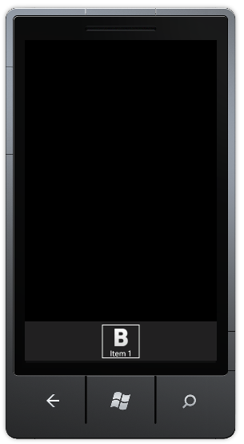

The Toolbar Items can be added to the application using either Xaml or procedural code. The following code illustrartes this
|
[XAML]
<syncfusion:ToolBar> <syncfusion:ToolBar.ToolBarItems> <syncfusion:ToolBarItem ImageSource="/Image.png" Caption="Item1"/> </syncfusion:ToolBar.ToolBarItems> </syncfusion:ToolBar>
|
|
[C#]
ToolBar toolbar1 = new ToolBar(); this.LayoutRoot.Children.Add(toolbar1); ToolBarItem item = new ToolBarItem(); item.Caption = " item 1"; item.ImageSource = new BitmapImage(new Uri("/Image.png", UriKind.Relative)); toolbar1.ToolBarItems.Add(item);
|

Figure 60: Adding Toolbar Item